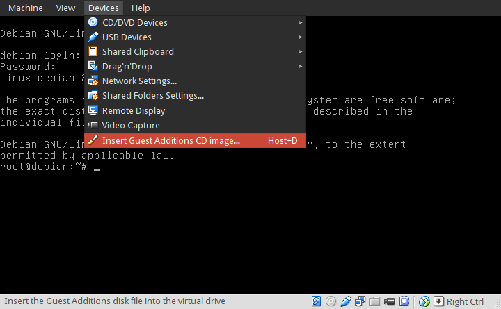
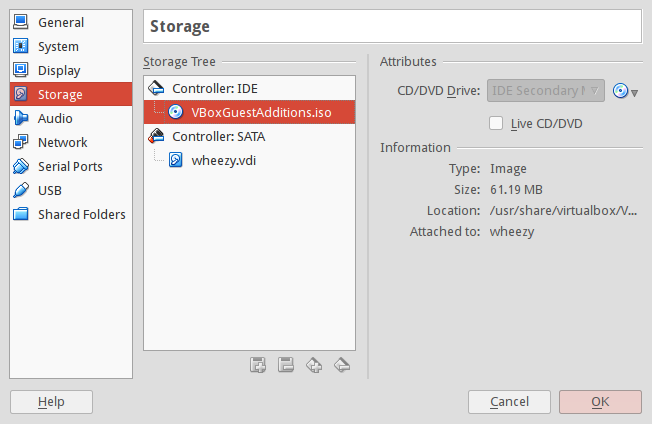

Virtualbox is virtualization software that allows a Linux user to HOST multiple GUEST OSs as virtual machines (VMs). Its a cool tool for playing with different Linux distros and experimenting with configurations.
In this HOWTO I install Virtualbox on a 64-bit Debian HOST and create a 32-bit Debian GUEST virtual machine.
Step 0 - Install VirtualBox on HOST
$ sudo apt-get install linux-headers-amd64
$ sudo apt-get install dkms
$ sudo apt-get install virtualbox virtualbox-dkms virtualbox-guest-additions-iso virtualbox-qt
Virtualbox kernel modules are built via Dynamic Kernel Module Support (DKMS). After installing the virtualbox packages the vbox modules should be auto-built and -loaded ...
$ lsmod | grep vbox
vboxpci 19066 0
vboxnetadp 13155 0
vboxnetflt 23571 0
vboxdrv 190057 4 vboxnetflt,vboxnetadp,vboxpci
Add USERNAME to the vboxusers group sudo adduser USERNAME vboxusers.
Step 1 - Create the Debian GUEST VM
The Default Machine Folder where VM images are stored is $HOME/Virtualbox VMs (this can be modified in File->Preferences->General).
See the User Manual for creating a GUEST VM. I use the Debian mini installer to create a new VM with a minimal system configuration. The installer auto-detects it is being configured as a VM and prompts for permission to install the virtualbox-ose-guest-x11 package. Go ahead and install.
After the new Debian guest VM is sucessfully created I clone the image Machine->Clone - preserving the fresh install image 'as is' - and go off to do all my experiments on the clone. Saves having to repeat the installation all over again.
Step 2 - GUEST VM Additions
Guest Additions are designed to be installed inside a guest VM after the operating system has been installed. This video was helpful for setting it up. Some cool extra features they provide are the ability to tweak display settings and add a shared folder that can accessed by both HOST and GUEST machines.
Debian GUEST is a 32-bit VM. Install on GUEST ...
$ sudo apt-get install linux-headers-486 # for a 486 kernel
$ sudo apt-get install dkms
$ sudo apt-get install virtualbox-guest-dkms virtualbox-guest-utils virtualbox-guest-x11
Add USERNAME to the vboxsf group.
Optional: Guest Additions CD
Earlier I installed Debian's virtualbox-guest-additions-iso package on HOST. Adding software from this image to GUEST often proves a bit wonky for me. Here is how I get it to work!
On GUEST edit /etc/fstab adding the exec permission to /dev/sr0 ...
/dev/sr0 /media/cdrom0 udf,iso9660 user,noauto,exec 0 0
On VirtualBox select Devices->Insert Guest Additions CD image...
You can see that under Machine->Settings... the image is available in the virtual drive ...
... and usually I manually mount the image and run the VBoxLinuxAdditions.run install script ...
$ sudo mount /dev/sr0
$ sudo /media/cdrom0/VBoxLinuxAdditions.run
Reboot GUEST and vbox drivers should be loaded ...
$ lsmod | grep vbox
vboxguest
vboxsf
vboxvideo
Step 3 - GUEST VM Configuration
Tweak display settings by going to the VM Machine->Settings...->Display and move the slider to add more video memory and enable 3d acceleration.

With VirtualBox guest additions installed the display and resolution can be changed when running X ...
$ ps aux | grep VBox
/usr/sbin/VBoxService
/usr/bin/VBoxClient --clipboard
/usr/bin/VBoxClient --display
/usr/bin/VBoxClient --seamless
If the VM does not use a graphical login manager to launch its desktop then modify $HOME/.xinitrc to start VBoxClient services ...
VBoxClient --clipboard &
VBoxClient --display &
VBoxClient --seamless &
Next create a shared folder on HOST. Make it accessible to GUEST by going to Machine->Settings...->Shared Folders and click Add Shared Folder and Auto-Mount.

Happy hacking!